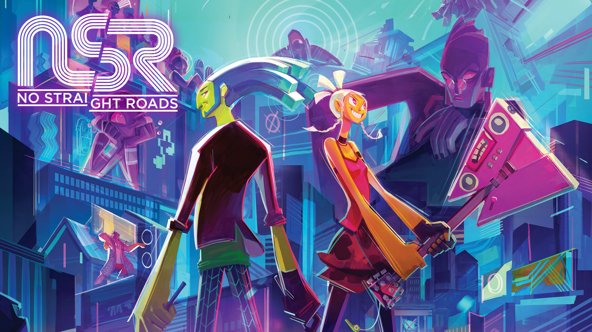

Um jogo com tema musical
No Straight Roads é um videogame de ação e aventura desenvolvido pelo estúdio independente da Malásia Metronomik e publicado pela Sold Out Ltd.
O foco está em umadupla de indie rock que luta contra um império EDM para libertar Vinyl City de seu controle com o poder de rocha .
O combate do jogo envolve ouvir a música, saber quando os inimigos atacam e quando atacar.
Foi lançado mundialmente em 25 de agosto de 2020 para PlayStation 4 , Xbox One , Nintendo Switch e PC através da Epic Games Store após três anos de desenvolvimento.
e vários atrasos devido à pandemia de COVID-19.
A versão atualizada do jogo, No Straight Roads: Encore Edition,
foi anunciada após um ano do lançamento do jogo
e foi lançada mundialmente em 21 de outubro de 2021, no Steam.

Capa do Jogo "No Straight Roads"
Jogabilidade
Em No Straight Roads , o jogador assume o controle de Mayday
ou Zuke e pode alternar entre eles a qualquer momento no modo single player.
O jogo é projetado em torno de um sistema de combate baseado em ritmo no qual
o jogador pode se mover livremente sem ter que seguir a batida,
mas ainda precisa prestar atenção às dicas de áudio para planejar seus movimentos.
As notas musicais que eles coletam podem ser usadas como munição e projéteis,
e alguns objetos podem ser transformados em armas e defesas durante as batalhas contra chefes.
Mayday e Zuke atacam de forma diferente devido às suas especializações.
Os swings de guitarra e as transformações de ataque de Mayday causam mais danos,
enquanto Zuke constrói combos com suas baquetas e fornece suporte usando suas transformações.
Uma árvore de habilidades depende do número de fãs que a banda tem de cada vez.
À medida que a popularidade de Bunk Bed Junction aumenta e seu número de fãs aumenta, o jogador recebe
atualizações para suas habilidades compartilhadas ou adições aos seus movimentos individuais.
Historia
Minha resenha sobre a historia do jogo
jogo se passa na metrópole fictícia de alta tecnologia de Vinyl City, que é considerada a
capital mundial da música. A cidade é governada por No Straight Roads (NSR),
um selo corrupto de EDM cujo objetivo é monopolizar a indústria da música e
continuar seu controle da cidade e manter a ordem. Vinyl City é composta de vários distritos,
cada um administrado por um dos artistas da NSR como charters.
Cada um deles possui um Disco de Platina que lhes dá o controle de um determinado distrito.